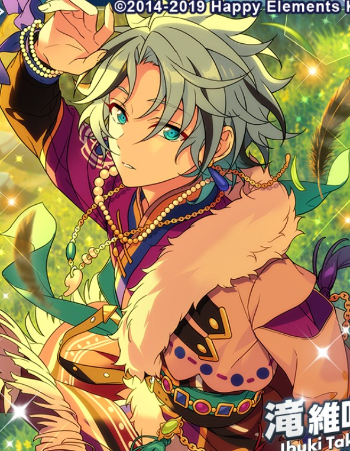

PETRARCA

Everyone Assemble! PETRARCA 1

Hey~ Is anybody there~? Can I take off this blindfold already~? I’m gonna do it, ‘kay~?

— Uuu, it’s blinding out…!
It got so bright all of a sudden, I can’t stop blinking!
Uhh, this is… the inside of the tour bus? Hey, why are we here again?
Right… Coulda swore us four were standin’ ‘round chattin’, waitin’ for the staff to come after gettin’ called over to the MEGASPHERE tower.
And before we knew it, some strangers came up all of a sudden and blindfolded us. I figure they must be taking us off somewhere~
Oh yeah! Meaning… We’re currently being held hostage!?
Crap! Where the heck are we going, then? Lemme take a peek out the window…
No way, we’re going down some sort of mountain road!? You’ve gotta be kidding, just where on earth are they taking us!?
Welp, the way those fellas snatched us up was pretty amateurish. ‘Cause of that, I reckon us gettin’ our way outta this’ll be easy as ABC.
I’ll take care of the guy drivin’ this thing, and y’all can—
Hey now. Enough with the hostage scenario, go on and sit your asses down~
Sagami-chan!? What are you doing here?
Ah— Don’t tell me… Are you the culprit!?
No, this is work— work, I tell you. For the love of god, take those dangerous thoughts and throw ‘em out of your brains already.
I got asked to be the acting supervisor for this remote shoot, putting me to work as a member of one of the branches of the MEGASPHERE staff.
If I weren’t, I wouldn’t be all the way out in the middle of nowhere, I tell you what. Ahh, what a pain.
This group of people for a remote shoot… Guess that means this is part of the project for that PETRARCA thing~?
Good guess. On that note, I’ll explain what’s going on from here, so be a good boy and sit.
Right, onto the nitty gritty details. In just a matter of time, you all will be taking on the project laid before you as promotion for the outdoor brand PETRARCA.
And the name is…— The PETRARCA Cup, the Meet-up in the Mountains Challenge!
Okay, let’s hear a round of applause~♪
(Clap, clap, clap)
(Clap, clap, clap)
The “Meet-up in the Mountains” challenge? What the heck is that?
The rules are painfully simple. First off, we’ve got PETRARCA uniforms and go-pro cameras that have been specially prepared for you on the bus.
Once you’re geared up, the four of you are going to be deliberately dropped off at different locations around the base of the mountain.
You have until sunset to traverse through the mountain, using your strengths to find and meet back up with the other members. Those are the basic rules.
That said, it won’t be enough to just climb the mountain.
From the moment you’re dropped off, there’ll be item caches hidden in various places, filled with high-quality outdoor items from PETRARCA.
So if you spot any while you’re out there trying to find each other, make sure you grab ‘em.
You’ll start off with nothing but the clothes on your backs and your cameras… but finding and recovering those items will make your trip up the mountain feel like smooth sailing.
This is a promotional campaign, of course, so don’t forget to work in some natural advertising when you find ‘em, alright?
Wait, that sounds kinda fun! I know a thing or two when it comes to the great outdoors, so leave it to me☆
I’ve never done actual mountain climbing before, but… I might be interested if I find some treasure!
Upgrading my equipment totally sounds like something straight out of one of those video game worlds Ukki~ plays a bunch, so I’m excited ♪
I pride myself on my survival skills~ Be it tree-climbing, rock-climbing, free-diving or anything else ♪ If we’ve got until sunset to meet up, I’d say that’s more than enough time~
Oh, glad to see you’re all fired up~ Ah, the joys of youth.
Alright then, change into your outfits, then——
Hold it. Got a question for ya, Sagami-han.
Hm? What is it, Oukawa?
—What’s the big idea, settin’ up a rough ’n rugged survival program for the shop we’re takin’ charge of?
I heard all about it from Esu-han, y’see. ‘Bout how the Eye Fittin’ folks came up with that cushy job experience livestream idea all on their own! 1
They got to play make-believe shopkeep off in la la land, so why’re we bein’ forced into a survival situation in the middle’a the gosh darned mountains!?
About that, Oukawa…
What, why d’ya look so miffed?
Use your brain.. Do you seriously think the four of you could decide on a project, put it together without it falling apart, and see it through to the end?
Well…
…
…
… Okay. Point taken.
Hold on, Oukawa-san and Sagami-san~? I could do that if I put my mind to it, you know~? I just haven’t been given that kinda chance up ‘til now~
Nope, there’s no way you guys could do it.
Let’s say, just for the heck of it, even if you guys managed to get a planning meeting going on your own, it’d be five minutes tops before you end up taking things outside to settle it, forcing an agreement with your fists.
I just know it. Well, at the very least, I know Akehoshi’s like that.
Ahaha, you totally get me, Sagami-chan~☆ I just can’t stay put!
Al~right, guess that makes us Team Zest and Zeal! Let’s all do our best to advertise the PETRARCA goods~☆
The heck kinda name is that? I mean, I’ve never been the type to do much'a anythin’ with zest or zeal…
But… Well, alright. Suppose I was one of those PETRARCA employees—ain’t no way I’d be leavin’ such an important promotion to this disorganized lot.
(Sigh)… Welp, nothin’ to it. I’ve already grown plenty used to these kindsa downright reckless projects in Crazy:B, guess I just gotta buckle in 'n accept my fate.
I’m not much familiar with mountain climbin’ myself, but I toured around a deserted island once, so I reckon I’ll manage.2
That’s the spirit~ Besides, you look like you pride yourself on your physical strength, don’t you?
I can tell just looking at your muscles. And I bet the four of us were chosen as ambassadors for this project because we all seemed fundamentally suited for the outdoors~
Ahh~ Yeah, that’s right. One more thing I should say, sorry. The guys at PETRARCA gave me a hint to help you all meet up with each other.
A hint? What do you mean, hint?
There’s a certain item to rule them all amongst the items PETRARCA has laid out for you, one absolutely essential for you all to successfully meet up with each other during this challenge.
So once you start, it’d be a good idea to look for “that” in particular.
…?
Oh. And with that, we’ve arrived at the first drop-off spot.
Well then, before we start—everyone, circle up!
A circle? Bit of a squeeze for a place like this…
Ah~ah~ah~ Team Zest and Zeal, remember?
Ain’t no way~ I don’t wanna be packed together like a buncha sardines~
Nyahaha ♪ Well then, on my shout~
We’ll absolutely meet again~ PETRARCA~♪
Hip, hip, hooray…☆
Hip, hip, hooray…☆
Everyone Assemble! PETRARCA 2

Deep within Mt. Ashigara~ Kintarō-san~♪ is learning Sumo wrestling today, too~♪3
(Sigh) … Walking by myself is sooo boring~ A mountain trail like this is easy money for me, y'know~?
This is work, so I try to make sure to talk into the camera, but… I can only talk to myself for so long, so I wanna meet up with someone else as soon as I can~
To do that, Sagami-san said that we had to find items that would help us on our journey, huh~
M~nn, items that’ll help us meet up with each other… What on earth could that look like~?
When I think about what Sagami-san told us, it was information they absolutely needed us to know… Or in other words, it’s something they absolutely want us to find, right~?
Is it an item that helps you know where the person is no matter where they are~? If that’s the case, it’d be awfully helpful!
Let’s see, Sagami-san said, “First you need to find that”, right~?
So does that mean that important item is gonna be near the starting point at the bottom of the mountain?
M~nn, is it around here~? If it’s something they absolutely want us to get, it should be relatively easy to get to, right?
… (Searching around the tree roots and the brush.)
Huh? It’s not here? Maybe I already passed it~?
…
No, the staff wanted us to find the item quickly, so they have to have hidden somewhere close to the starting point~
… Still. Having said that, there’s no way the staff would put the item somewhere super easy to find. That’d kill the excitement and make the show super boring~
So, if I think of it that way, I should probably look in an unexpected place. If it’s not on the ground, maybe I should look…
Nyahaha, found you ♪ There’s a walkie-talk tied up up there in the tree!
Hm? Now that I get a better look at it, there’s a small burrow at the root of the tree~
Ah, there’s a snake in its nest! It’s flicking out its tongue like it’s trying to scare me off.
Hoh-hoh, I see what this is~? If you reach out to try and grab the walkie-talkie, you’ll notice the snake hole at your feet and get a fright...
The staff must have tied it up that way so they could get some good footage, huh~?
Nyahaha. Too bad, so sad~ There’s tons of snakes in Okinawa, so~ This little guy on his own isn’t enough to scare me~♪
You have to be quick and precise to catch a snake, so…
Hup!
Nyahaha, gotcha ♪ That was way too much of a piece of cake for me~
I might need to eat later, so I’ll just shove this into my pocket for safekeeping~
And now to climb the tree… (Huff) Up we go…

There we go, I got the walkie-talkie~♪
Let’s see, how do I turn this on… Here~? Click!
“He~y, this is Taki Ibuki. Can anyone hear me~?”
“Oh, Takki~! Yahoo, yahoo, I can hear you loud and clear~☆”
“Kokoko ♪ And with that, seems like we can all safely keep in touch with each other.”
“Huh? Does that mean I’m in last place~? Did you guys already figure out where they hid the walkie-talkies or something?”
“Nah, I just got super lucky and picked it up! I was walking down the trail when, coincidentally, I spied with my little eye a walkie-talkie tied to a rock~”
“Ahaha, me too! I just happened to be looking at my feet wondering if I’d find a pretty rock, and suddenly, there it was ☆"
"Anyways. Is everyone alright so far? No one’s hurt, are they?”
“We’ve barely started, so I’m fit as a fiddle. That said, we’ve still only got our starter equipment, so we should probably get to rustlin’ up some other items sooner than later.”
“If we wander around trying to meet up with each other, we should stumble on items eventually, right? There’s no need to hurry.”
“Still, if it’s a meetup we’re shooting for, that means we’d better decide on a meeting spot!”
“Should we all head towards someone’s location? Or maybe it’d be better to find some sort of landmark and head over that way…”
“M~nn, about that… I was so absorbed in finding a pretty rock, I ended up wandering deep into the forest before I knew it.”
“All I can see around me are trees, and there’s nothing I can really make into a marker. I don’t even know which direction I walked here from!”
"Just about the same on my end. The scenery’s blendin’ together into itself—don’t matter which direction ya look, there’s absolutely nothin’ in sight."
“Yeah, same here. It looks like just because we found the walkie-talkies doesn’t mean we’re gonna be able to meet up with each other right away, huh~?”
“Mmm~ In that case, how about we just aim for the summit for the time being?”
“Even if you don’t know the way, there’s no way you’ll get lost since you’re just walking up. I’d say the summit makes for a good landmark, it’s easy enough for anyone to spot!”
“You’d have to be careful while climbing though, since it’s a bit steep. But on the plus side, we’ve had good weather these past couple days, so I’m sure whatever footholds you find should be stable.”
“I don’t think it’s that dangerous of a route as long as you keep an eye out for wild animals!”
“I see, Esu’s got a point~ We’re a lot more certain to run into each other if we aim for the same spot rather than make a wrong move and end up turned around~”
“That’s a bonafide adventurer showing off his moves, alright!”
“Thank you so much! It’s an honor to be praised by you, Akehoshi-senpai!!!!”
“Ain’t that right? I thought ya were nothin’ but an idiot back when ya made me run around all over the place with ya on one of your ‘adventures,’4 but you’re an unexpectedly reliable fella…”
“—UwaAAAA!?”
“Huh, Esu!? Are you alright!?”
“What happened? Don’t tell me he’s gettin’ mauled by an animal or somethin’...!?"
“Esu, if you can hear us, please respond~!”
“—t’s…azy…!”
“Esu-han!?”
“Thank goodness, guess he’s safe.”
“I can’t really hear what he’s saying, though~ Could you speak up a little?”
“THAT’S CRAZY!!!!”
“To think there’d be a MASSIVE matsutake mushroom growing in a place like this! This is the first time I’ve seen one growing in the wild!!!!”
“Way to be misleadin’, ya idiot!”
Everyone Assemble! PETRARCA 3

“Omurice!”5
“S… Steak!”
“Curry rice!”
“S!? Uhh… Star fruit!”
“Taco rice!”
“S… Sukiyaki!”
“Cucumber slice!”
“‘S’ again!? Akehoshi-senpai, quit it with the ‘S’ already! Like come on, that last one was a bit of a stretch.”
“Ahaha. If you can’t come up with a word, that means you lose, Esu~☆”
“Anyways, all this mountain-climbing has gotten me super tired and hungry~ I feel pretty good about my stamina, but I can definitely feel the fatigue racking up already.”
“Ahaha, I’d say the hungry part is due to our food word game! But yeah, I’m pretty hungry myself.”
“Maybe there’s something yummy around here somewhere~ Hey Esu, are you any good at identifying edible mushrooms?"
“I could do it if I had a field guide on me!!!!”
“Ahaha, so that’s a no then..”
“... Huh? There’s an item cache over there!”
“Eh, really!? That’s Akehoshi-senpai for ya, always lucking out~☆ I wonder what’s inside?”
“Ehehe, I’m starving, so I hope it’s food~”
“Opened! … Ah, there it is!”
“They’re food provisions! Oh, PETRARCA, you guys are so smart ♪”
“Well then, time to scarf this do~wn!”
“Eh, you’re eating them now!? We don’t know when we’ll be able to get more food—shouldn’t you be saving it for an emergency…!?”
“Huh? I’m the hungriest I’ve ever been, of course it’s an emergency!”
(Chomp chomp) "… Ah, this fruit! It’s got a super filling flavor~!”
“I-Is this really a good idea…? I mean, we’re basically mountain-climbing y’know? I don’t think you should carelessly eat it all.”
“Well actually, this is for a promotion, so maybe it’s better to eat them as soon as you find them so you can give your review on it…?”
“—A-ha! So you ate them because you were thinking that far ahead! Genius! I simply must follow in your footsteps!”
(Chomp, chomp) "It’s deli~cious ♪ I can feel my energy coming right back to me… — Hm?”
“What’s wrong, Akehoshi-senpai?”
“I… feel like I felt the earth shaking a little.”
“Eh, is it an earthquake? I’m not feeling much quaking on my end though…”
“Nope! A huge log just started rolling my way from above!?”
“No way, could it be because I took these provisions!? Was taking an item the trigger that set off this trap~!?”
“Is nothing off limits to you, PETRARCA!? Anyway, run away as fast as you can!”
“Uwaaaa!? Hold on, this road just goes straight forward! There’s no way to escape~!”
“There’s no other way—you just gotta run straight down! Pedal to the metal!"
“There’s no way that’s gonna happen~! At that speed, it’ll catch up to me in no time!”

(Pant, pant) …! Well, at least this food’s easy to eat on the run! And tasty too! ☆”
“If all you guys out there are ever mountain-climbing too, PETRARCA’s food provisions are the way to go…♪”
“Is now really the time for that!? The idol grindset is crazy!”
“Uwaaa, it’s catching up~!”

—Hm? I thought I heard someone shouting just now~
“He~y, it’s Ibuki. Is someone in trouble? Gimme a call if so~”
...
…No response, huh~? There must be no reception? Or maybe things got so precarious they can’t even use their walkie-talkie…?
Mn~n…
Well, I’m sure it’s fine ♪
It’s not like I can go running to save them right away anyways~ It’s everyone for themselves, so I’ll just ignore it~
More importantly, I wanna do something about the snake I just caught~
It’d be a pain to keep bringing it all the way up to the mountain~? I should probably just cook it up somewhere~
H~mn, maybe there’s an item cache around here somewhere~ It sure would be nice to get something like a sharp, survival knife…
… Oh! Is that an item cache hidden in the shade of the rock over there?
Nyahaha, it’s my lucky day! I’m Japan’s number one lucky boy~♪6
Whatever’s in here must be pretty important… Wait. Hm? What is this? This isn’t a knife~
These are… sunglasses? But they don’t look like outdoor sunglasses~? Looks like there’s not just PETRARCA merchandise in these boxes?
Huh? Looks like there’s a note on the box~ Let’s see here…?
“To the one who has opened this item cache. I hope your “Mountain Meet-up Challenge” is going well.”
“UV rays can be taxing on the body if they hit your eyes. Please wear these sunglasses, protect your eyes, and fight off the summer heat as you make your way back to each other.”
“I wish for the success of the PETRARCA promotional campaign. Cache sponsored by Eye Fitting’s Hasumi Keito…”
Hasumi-san!? What the heck is that guy doing!?
I mean, what do you mean this project was a collaboration with Eye Fitting~? I didn’t know that~
But…
There’s trees and leaves as far as the eye can see… The sunlight isn’t really peeking through the canopy at all.
Hasumi-san… This is completely useless right now~
Everyone Assemble! PETRARCA 4

–Phew. Been walkin’ quite a ways now an’ I still haven’t reached the top. I’ll be just about ready to drop before too long.
I found quite a few of those item cache thingamajigs, but no matter how many of ‘em I find, ‘s not like they do me any good since I don’t know the first thing ‘bout usin’ ‘em.
I tried askin’ everyone over the walkie-talkie, but maybe I’m just no good at explainin’ stuff, ‘cause I still don’t know what the heck kindsa goods these are.
…Not bein’ any good at explainin’ merchandise... Ain’t that kinda problematic for an ambassador?
…Oh, speak’a the devil, there’s another item cache over there.
Tied up in a tree again. It was the same for the other ones I found, but they sure are puttin’ us to work for these items—there’s always some sorta challenge involved.
Guess the PETRARCA staff are just that desperate for some good footage, huh?
Welp, me ‘n tree climbin’ go way back so I’ll have this down in a jiffy♪
Heave… Ho…
Alright, got it. Now let’s see what’s in here?
…The heck’s this? A fryin’ pan… An’ some sorta mystery-stick.
I know what a fryin’ pan does, but what’s this stick for? Am I suppose’ta use it against wild animals?
But havin’ somethin’ like this would get in the way when walkin’...
Mhm. Don’t need this ol’ thing, I’m tossin’ it.
Hold it right there~!!!! CAUGHT IT!

Esu-han!? Where the heck’dya come from!?
Better question, what’s with all the stuff you’re luggin’ around!? Ya found that many items!?
Fu~fu~ Just who do you think I am~? I’m the wilderness loving adventurer, Esu! Looking for loot while climbing mountains is all in a day's work!
More importantly! Oukawa-kun, this thing you threw just now. This is a super duper convenient item, throwing it away is a big no-no!
Eh, is that right? What’s the point in having a fryin’ pan and nothin’ else? An’ this stick is just good for beatin’ up some wild animals, right?
That’s a “skillet” and this is a “fire starter”! It’s not something you beat up animals with!
A ski… Whosawhatsit?
A skillet! It’s got the same use as a frying pan, but skillets are what you use when you go camping!
And this fire starter is, as the name implies, a special item used to start fires! I guess it’s kinda like the modern equivalent of flint and steel?
Flint and steel, huh? But how’re ya suppose’ta start a fire with just a stick?
Welp, time for a demonstration!
Alrighty, and so it begins! The moment you’ve all been waiting for—Esu’s maximum velocity cooking! Today, we’ll be using the following!
Somethin’s beginnin’...
This fire starter and skillet, this matsutake I found earlier, plus these edible plants I foraged, throw some PETRARCA flavorings into the mix—We’ve got all kinds of things!
First we’ve gotta get our burner going, so I’ll take this fire starter, scrape off a few shavings… and voilà! Fire! Now we heat up the skillet overtop!
There, we heartily throw in the matsutake, the edible plants, and so on and so forth!
Mmm~ Smells good! Now for the pièce de résistance! A couple drops here and there of this special PETRARCA soy sauce I found…
And there you have it! Esu’s capriciously thrown-together skillet bake—complete! Oukawa-kun, try a bite!
Woah, it looks mighty fine on the outside, I’ll give ya that.
Alrighty, down the hatch it goes.
(Munch, munch) ...
Blegh, yuck~!
What the heck, with all those bells an’ whistles ya had goin’, I thought ya were really makin’ somethin’ delicious there!
Huh, really? Lemme try a bite… (Munch, munch) ...
Yup, that’s awful! The bitterness, tartness, and acidity are all mixing together to make the worst taste possible!
Well, I did just kinda haphazardly throw in all these ingredients that should’ve, in theory, been tasty enough on their own—so it’s only natural it turned out this way!
In conclusion! Adventure☆Failed…!!!!
“Adventure☆Failed…!!!!” my ass! Don’t go draggin’ me down with ya!
Taste aside, viewers, please feast your eyes on the specs of these two items we used☆
An’ now you’re advertisin’ straight into the camera. Seriously, the heck is this…?
Ehehe… Well, this is for a promotion, so I thought I’d make it more promo-ish, or something. Ah, as for a bit of a palate cleanser, here—have this PETRARCA branded water!
(Gulp, gulp)... Jeez, I’m havin’ one awful time.
Well, gross as it is, ya really do know your way ‘round these things, huh, Esu-han?
Those all woulda gone to waste if it were just me here. I’m real glad we met up.
If you’ve been out in the great outdoors since you were a kid, naturally, you get a feel for all the gear ♪
Anyways, I’m the one who should be saying that! I’m super glad we met up too!
We decided on meeting up at the summit, but I wasn’t having any luck finding anyone which had me a liiittle worried there~
Didn’t make for much of an emotional reunion since we met up in such a puzzlin’ situation, though.
Anyhow, the sun’s gonna be settin’ anytime soon, so we’d better hurry an’ meet up with Akehoshi-han an’ Taki-han soon. ‘Cause when all’s said an’ done, we also got that time limit of ours right up against our heels.
How about I try asking them where they are on the walkie-talkie? We might be able to run into them before reaching the summit, just like we did!
“Ah~ Ah~ Testing one, two! Esu, reporting in! I’ve made contact with Oukawa-kun just now! What’s the sitch for you guys?”
...
...
Huh? No response… Maybe they’re in another dead zone where the signal can’t reach?
Wonder what’s wrong? Don’t tell me somethin’ happened to the two of ‘em…?
Everyone Assemble! PETRARCA 5

“Hello~? Hello~? This is Subaru. Can anyone hear my voice? He~llo~?”
…
(No good. Looks like I broke the walkie-talkie after all.)
(It probably wasn’t good that I dropped it back when I was running from the log. It’s totally dead.)
(Damn it, stupid piece of junk! It broke right when I needed it the most!)
(Anyways. I have no clue where I am on this mountain. I got so sucked into escaping from the log, I ended up who-knows-where.)
(Even if I tried to aim for the top of the mountain, the sun’s already setting. If I make any reckless moves, there’s a chance I’ll get hurt.)
(… If we run out the time limit, the staff said they’d come and pick us up, so it’s probably better if I just stay put here until then.)
(... But… will the staff know where we all are right away?)
(If they don’t find us immediately, I’ll have to wait a pretty long time to get picked up, right…?)
…
(Snap out of it, snap out of it! I almost let my spirits drop there!)
(Maybe I’m just hungry~ When it comes to humans, hunger and sleep deprivation can really get that negative thinking creeping up on you.)
(At a time like this, I just need to eat those food provisions I got and lift my spirits!)
(Let’s see… I know I put them in this bag somewhere…)
(... Nope.)
(That’s right… I ate it all back there…)
(Ah, damn. I’m such an idiot, I wasn’t thinking about what I’d do after~!)
(Ah, what should I do? I’m completely alone.)
(I think… I might be feeling a little scared now.)
(Please…! Someone, come quick…!)
(... Hm? Did something just shine over there?)
(Yeah, there’s definitely something shining brightly. I’ll try heading over.)

(It’s a bonfire. That must mean there’s somebody around!)
He~llo? Is anybody there~?
He~ll~ooo?
…
…–!
Huh? Akehoshi-san! You scared me~
You scared me! What the heck do you think you’re doing, coming at me with a sudden roundhouse kick!?
Nyahaha, I was doing a little hunting when I saw some kinda shadow, so I thought it was a wild animal approaching~
But I managed to stop before I hit you, so it’s all good~♪ I didn’t roundhouse you~
But you came pretty freaking close!? Aaa, that was terrifying!
Still, I’m so glad I ran into you, Akehoshi-san~ The sun’s gonna be setting any time soon. If things had kept up the way they were going and I still hadn’t run into anybody, I’d have totally ruined the project~
… Yeah, I know what you mean. I’m totally relieved I managed to run into you too, Takki~
…
… Akehoshi-san, you must be hungry, right? Did you wanna eat something~?
Huh? Yes please! Truthfully, I did manage to get some food provisions, but I ended up eating them all… and now I’m totally starving.
That’s good ♪ I’ll feed you as best I can, so please gimme a sec~
Let’s see, it should be in my pocket somewhere… Ah, there it is~
H—Hold on!? Are we… Are we eating a snake!?
Yup~ In some regions, it’s a pretty normal thing for people to eat snakes,7 so it’s alright~
I—I see… I’m a little worried, but… okay. I’ll just wait until it’s done.
♪~♪~♪
(Takki~ you really know what you’re doing, huh? Look at you, humming a song. You really are suited for survival, huh?)
(When I gaze into the fire and relax like this… There’s something reassuring about it. The sound of a bonfire crackling has a healing effect for sure.)
(When I listen to it, I can feel all the loneliness and fear from a second ago completely slip away…)
... (Preparing the food.)
(... No, maybe the reason I’m not scared anymore is because Takki’s here with me.)
(Even in a mountain as unfamiliar as this, he’s just cooking food for us like it’s nothing. I can rely on him… no, I should say, just being with him is what relaxes me.)
(... He’s amazing, isn’t he?)
Takki~ … Thanks.
There’s no need to thank me. Dishing this up is a piece of cake for me~
Hehe, that’s not what I’m thanking you for.
Hm~? What is it then~?
It’s nothing you need to worry about! More importantly, Takki…–
— Shhh. Akehoshi-san, quiet down a little~
Yeah, sure enough. Those are the sounds of something approaching us from the bushes~
Everyone Assemble! PETRARCA 6

What was that? Don’t tell me… is there seriously a wild animal coming towards us?
I don’t know, but those footsteps sound like they belong to something pretty big~
What? Could it be a bear coming straight for us!? What should we do? We don’t have anything to defend ourselves with!
Nyahaha, a bear’s no match for me, you know~ I’ve taken down plenty of bears in my time!8
But it’s going to be dangerous, so get behind me Akehoshi-san. I’ll definitely keep you safe, so just rest easy, ‘kay~
Ooo, you’re a real heartthrob,9 Takki! I’m a man, but my heart started pounding before I knew it!
Nyahaha, I think that's just the suspension bridge effect talking.10 Just be quiet and do what I say~
Takki’s readying himself for a fight… You’re awfully reliable, but… are you seriously going to fight it bare-handed!?
It’s coming, Akehoshi-san…!
Hah!
Hoh!
…!?
…!?
…. What the, Oukawa-san!?
Taki-han!?
Well I’ll be… It’s Taki-han an’ Akehoshi-han! I felt a fearsome presence behind that there bush—thought it was a bear or somethin’ so I was gettin’ ready to pull some counter maneuvers!
That should be my line~ You scared me, I thought you were some kind of huge mountain creature~
Oh, Kunkun and Esu! What a relief we ran into you two!
Oh, I just heard a whistle go off somewhere. Guess that means the challenge is over. Glad it ended with everyone safe ‘n sound, no scratches or nothin’.
We promised to meet at the top, but one thing led to another and the next thing you know, we all somehow found ourselves at the riverside. Looks like we might not have needed landmarks or walkie-talkies to meet up after all!
Nyahaha ♪ Now that everything’s come to a peaceful resolution, it’s time to throw a big ol’ feast for the night~ Lemme grab this— hup— big guy!
Uwah, a boar!? Where the heck did you pull that out from!?
Before you all got here, I killed it pretty easy~ We’ll use this guy for a boar party~♪11
Huh? Where’ve you been hiding that thing!? I had no clue you had a boar too!
Sounds like a mighty fine idea. Life is precious, it’d be downright sinful not to make somethin’ delicious with it. If that’s what we’re gonna be doin’, I reckon we might even be able to make good use of this skillet we found.
Ah, in that case, help yourselves to these items I collected! Everything from these ultralightweight collapsible folding chairs and survival knife, all the way down to this special PETRARCA branded soy sauce—I’ve got it all☆
Ahaha, I was thinking you were carrying such a huge haul. So you collected tons of stuff along the way, huh, Esu!
Well then, I’ll get to cooking~ Oukawa-san, could you gimme a hand~?
‘Course, leave it to me. I’ve had my fair share of watchin’ Niki-han cook, so I reckon I’d be a pretty good support.
Then, I’ll… do the most important job when it comes to cooking, and be the taste-tester!
Ahaha, don’t just sit back and taste everything, help out a bit, would’ja~?
Nyahaha. Yep, sure enough, it’s a real hustle and bustle with the four of us together~♪ I’m looking forward to how the cooking ends up~

Hai-sai~!12 Sorry I’m late~? My previous job ran a little over…
Huh? What are you guys watching, hovered around the phone like that~?
Oh, Takki~ You come over and see too! The view count for the PETRARCA promotional video we shot the other day is shooting up like crazy!
Huh~? Let’s see, let’s see…
One, ten, a hundred, a thousand, tens of thousands… Whoa, you’re right~ The view counts are keeping high even today~♪
Looks like the folks who saw our promotional video are spreadin’ it ‘round SNS, callin’ us a hoot.
See, take a gander at the comments. It’s real neat seein’ what everyone thinks about it.
“Mountain-climbing seems so fun!” “They’re way too into survival stuff lmao” “I feel a little interested in the outdoors too now.”
There’s people who made compilation videos of all the slapstick stuff we were doing too! Everyone seems like they’re having a super good time with it!
Yup, yup! I was talking to one of the staff members earlier, and thanks to the video getting so popular, PETRARCA products are in high demand!
It looks like a lot of people have become interested in the great outdoors thanks to our video!
So what you’re saying is that our work as PETRARCA was essentially super-duper flawless! We did it, Takki~☆
Nyahaha, that’s a relief~ If it was this popular with people, maybe we should give it another try~♪
About that… Take a look at this first.
Hm? What’s this? A project proposal from the people in PETRARCA?
Let’s see, what’s this now? “Go with the PETRARCA Ambassadors Four! Seven Days Escapade on a Deserted Island (Sponsored by: Thrilling☆Travellers)...?
Uwaaa, so the PETRARCA staff got hooked on us~!
They’re sendin’ us to a deserted island for seven days…!? That goes way beyond bein’ an ambassador, that’s just your everyday survival star, ain’t it!? An’ whaddya mean, Thrillin’☆Travelers are involved too?
Nyahaha ♪ Well, it might not be so bad doing something like this again, huh~?
We managed to meet up with everyone just fine, traversing that huge of a mountain expanse, after all. I think we could definitely manage a deserted island easy~
Ah, if the next place we get put in is a deserted island, maybe I’ll get to go sea-fishing next, huh~? I’m definitely looking forward to that~♪
... Yeah, totally! If it’s the four of us, we’ll definitely be able to nail the next job too!
Nyahaha. No matter where we go, you can always count on us, PETRARCA ambassadors~♪
Translation Notes
- ↑ Referencing the campaign from EYE FITTTING.
- ↑ Referencing the story All-Round ACE.
- ↑ This is a reference to Ibuki Taki Idol Story 1.
- ↑ This is referencing Kohaku Feature Scout 3.
- ↑ They're playing shiritori (しりとり), a word game in which players have to give a word starting with the last syllable of the word given by the last player. In English, this would be the same letter, but in Japanese it's the same sound (e.g., -su/-ki). We localized this section by changing some of the words to make the same sounds like they would in Japanese.
- ↑ This is a reference to Ibuki Taki Idol Story 1.
- ↑ Eating snakes is rare on mainland Japan. The Ryukyu Islands on the other hand have several snake dishes like irabu soup (イラブー汁; sea snake soup), as well as habushu (ハブ酒; an awamori-based liquor infused with pit vipers) and fried habu.
- ↑ Ibuki takes down a bear in Ibuki Taki Idol Story 1 and talks about fighting grizzly bears in The Legend of KAGETSU.
- ↑ Ikemen (イケメン) are exceptionally cool, good-looking or hunky guys.
- ↑ The suspension bridge effect is where someone who is in fear or surprise mistakes that physiological response as romantic arousal.
- ↑ Ibuki mentions having taken down boars in Dynamic Diamond.
- ↑ An uchinaaguchi greeting used in Okinawa. Uchinaaguchi is one of the native languages of Okinawa.